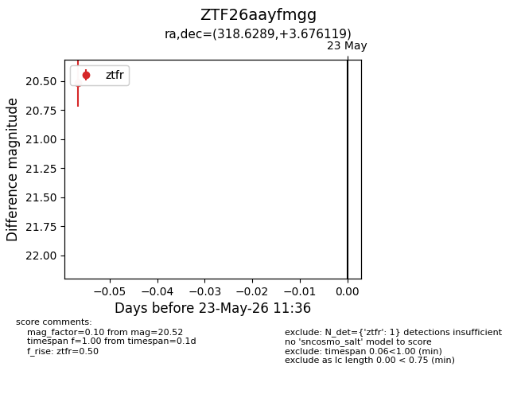
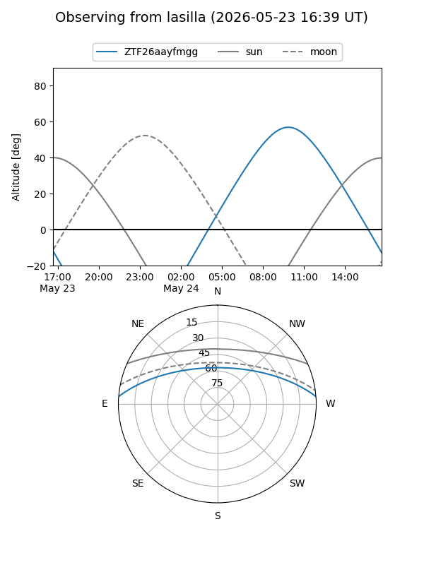
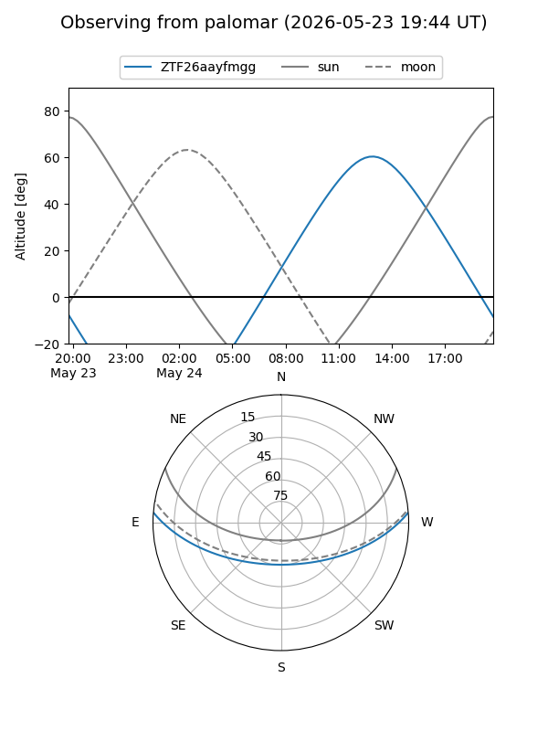

ZTF26aayfmgg
Target ZTF26aayfmgg at 2026-05-23 11:37
Aliases and brokers:
lsst-FINK: link
lsst-Lasair: link
lsst-ALeRCE: link
ztf-FINK: link
ztf-Lasair: link
ztf-ALeRCE: link
alt names
ZTF26aayfmgg (ztf,fink_ztf)
Coordinates:
equatorial (ra, dec) = 318.6289,+3.67612
equatorial (HMS+DMS) = 21:14:30.94,+03:40:34.03
galactic (l, b) = (54.6824,-29.33491)
Flags:
Photometry:
last ztfr=20.52
1 ztfr detections
Lightcurve

Visibility


Additional plots